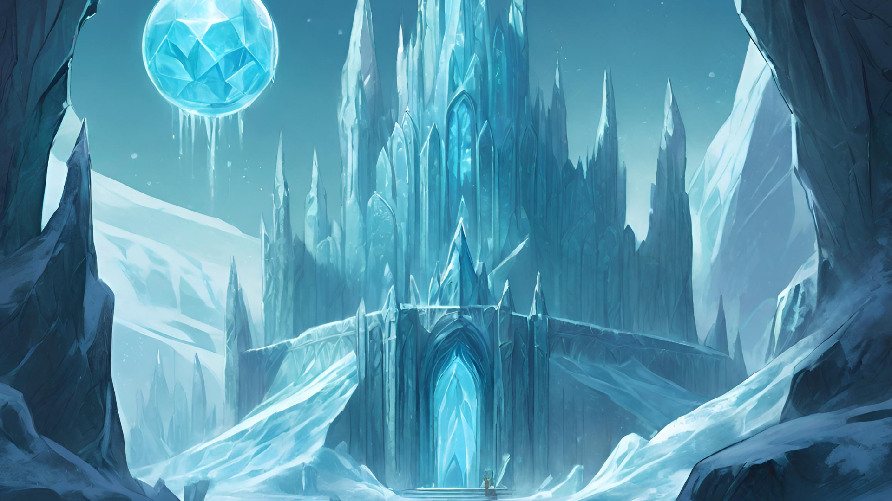
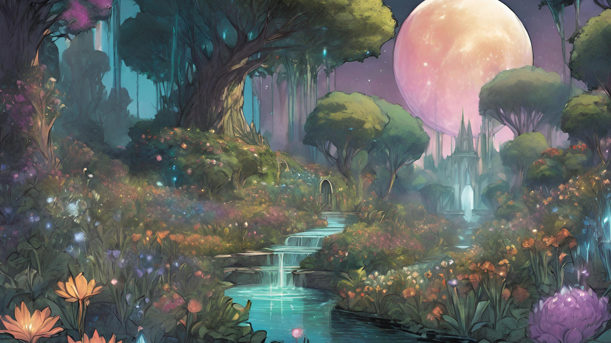
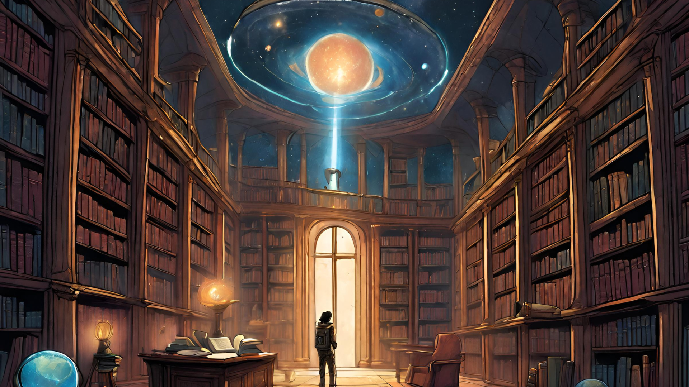
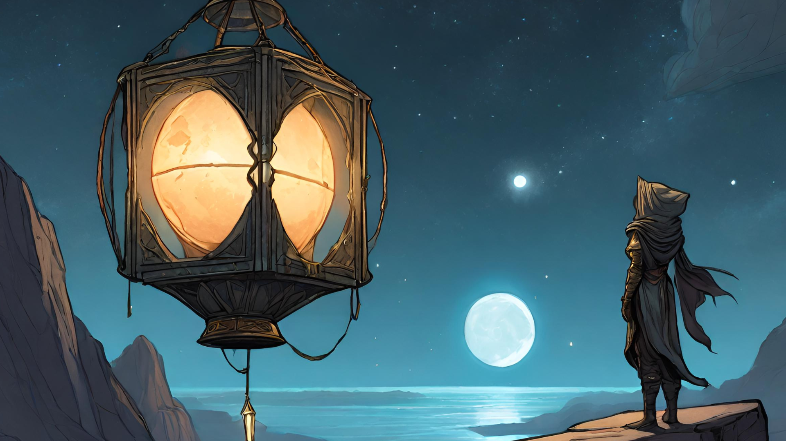

The rocket has reached the thrilling
frontier of our journey,
space pioneer!
The rocket has reached the thrilling
frontier of our journey,
space pioneer!
William Herschel, a skilled musician residing in 18th century England, was not only known for his musical talents
but also for his deep curiosity. His fascination with the night sky led him to embark on astronomical studies using a
telescope of his own construction, alongside his brother Alexander and sister Caroline.
In 1781, they made history by discovering the planet Uranus - the first such discovery since ancient times
and the inaugural planetary finding through a telescope.
Despite an unsuccessful attempt to name it Georgium Sidus after King George III, this celestial body was
eventually named Uranus after the Greek god of the sky, following suit with other planets being named after deities.
Size: 32,000 miles (51,000 kilometers). Uranus is the third largest planet in the solar system.
About 63 Earths could fit inside Uranus.
Gases: Mainly hydrogen and helium. Small amounts of the gas methane give Uranus a blue-green
color. Underneath its huge layers of gases, the planet has a smaller area of thick, hot liquid.
Rings:Thin, narrow rings made of ice and rocks. The rings that surround Uranus are very dark.
They reflect about as much light as charcoal.
Structue and Surface: Uranus is an ice giant (instead of a gas giant). It is mostly made of flowing
icy materials above a solid core.
Time on Uranus:Uranus is the only planet that spins on its side. and it spins the opposite direction
as Earth and most other planets
Uranus, the seventh planet of the Solar System, has 28 known moons. Most of them are named after characters that appear in, or are mentioned in, the works
of William Shakespeare and Alexander Pope. Uranus's moons are divided into three groups: thirteen inner moons ex:juliet, five major moons, and ten irregular moons.
The inner and major moons all have prograde orbits and are cumulatively classified as regular moons. In contrast, the orbits of the irregular moons are distant, highly
inclined, and mostly retrograde.
William Herschel discovered the first two moons, Titania and Oberon, in 1787. The other three ellipsoidal moons were discovered in 1851 by William Lassell (Ariel and
Umbriel) and in 1948 by Gerard Kuiper (Miranda). These five may be in hydrostatic equilibrium, and so would be considered dwarf planets if they were in direct orbit
about the Sun. The remaining moons were discovered after 1985, either during the Voyager 2 flyby mission or with the aid of advanced Earth-based telescopes.
Imagine Ariel, one of Uranus's moons, as a magical palace made entirely of ice
crystals. Deep within its frozen halls resides a powerful enchantress, weaving spells
to protect the moon and its inhabitants from the icy cold of space. Only those with pure
hearts and adventurous spirits can brave
the journey to seek her wisdom.

Titania, the largest moon of Uranus, is said to be home to a mystical garden where
dreams come to life. In this enchanted realm, flowers bloom in every color of the rainbow,
and gentle streams flow with liquid diamonds. It is said that anyone who visits Titania's
Garden of Dreams will find inspiration and courage to pursue their greatest desires.

Oberon, the mysterious moon shrouded in darkness, is on a never-ending quest
for knowledge. Legends say that deep within Oberon's shadowy depths lies a library
containing the secrets of the universe. Only the bravest explorers dare to venture
into the darkness, guided by the faint glow of distant stars, in search of the wisdom
hidden within Oberon's ancient tomes.

Umbriel, the quiet and mysterious moon of Uranus, possesses a magical lantern that
lights up the darkest corners of the night sky. Whoever holds Umbriel's Lantern can
navigate through the vastness of space with ease, guiding lost travelers safely home. But
beware, for Umbriel's light also reveals hidden dangers lurking in the shadows.

These myths serve not only to entertain but also to inspire young minds to explore the wonders of the universe. As they gaze up at the night sky, let
their imaginations soar among the stars, fueled by the captivating tales of Uranus and its moons. Who knows what secrets and adventures await them in the
vast expanse of space?
| Parametes | Earth | Uranus |
|---|---|---|
| Mass (1024 kg) | 5.9722 | 86.811 |
| Volume (1010 km3) | 108.321 | 6,833 |
| Mean density (kg/m3) | 5,513 | 1,270 |
| Gravity(m/s2) | 9.82 | 9.01 |
| Black-body temperature (K) | 254.0 | 58.1 |
Back

GO TO Neptune